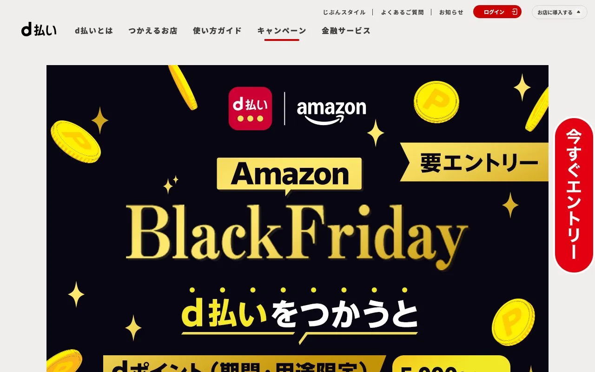

Amazonで「d払い」を使うと、お買物した金額の分だけdポイントが100%還元されるキャンペーンが始まりました。エントリー期間は2026年11月19日10:00から12月7日23:59までで、条件を満たした人の中から抽選で5,000名に、進呈上限5,000ポイントまでdポイント(期間・用途限定)が当たります。
01エントリーとお買物、期間がズレている
このキャンペーンで注意したいのは、エントリーできる期間と、お買物が対象になる期間がズレていることです。
| 区分 | 期間 |
|---|---|
| エントリー期間 | 2026年11月19日(木)10:00〜12月7日(月)23:59 |
| お買物期間 | 2026年11月27日(金)0:00〜12月7日(月)23:59 |
エントリーは11月19日からすでに始まっていますが、d払いで買い物をしても対象として数えられるのは11月27日0:00以降です。公式規約には「キャンペーン期間内であれば、お買物後のエントリーも有効となります」ともあるので、エントリーを忘れていても12月7日23:59までなら間に合います。

02還元の中身と当選確率100倍の条件
対象条件(エントリー完了・d払いでの買物・dポイントクラブ会員)をすべて満たした人の中から、抽選で5,000名に、キャンペーン期間中のd払い利用総額の100%がdポイント(期間・用途限定)として進呈されます。進呈上限は5,000ポイントです。
公式規約の例では、利用総額5,000円(dポイント利用分0円)の場合、通常ポイント25pt+キャンペーンポイント5,000pt=合計5,025ptとされています。計算すると、進呈上限の5,000ptに届くのは利用総額5,000円のときで、それを超えて使っても上乗せされるキャンペーンポイントは5,000ptのまま増えません(通常ポイントだけは利用額に応じて増えます)。
また、2026年11月16日23:59時点でAmazonでのd払い利用履歴がないか、2026年10月1日〜11月16日の間に利用履歴がない人は、当選確率が100倍になります。

03対象外・注意点
注意支払い方法は電話料金合算払いのみが対象です。クレジットカード払いでは対象になりません。
- Amazonギフトカードなど、一部d払いが利用できない商品の購入は対象外です。
- 注文手続きが完了しただけでは対象になりません。商品の発送手配が完了して、ドコモに支払い情報が到着した時点で完了扱いになります。
- 注文をキャンセルした場合は対象外です。
- エントリーにはspモードまたはahamoの契約と、dポイントクラブ会員であることが必要です。
- 同じキャンペーン期間中にドコモの他の懸賞へ重複して当選できない場合があります。
04よくある質問
エントリーの締め切りはいつですか?
2026年12月7日(月)23:59までです。お買物期間と同じ日に締め切られます。
いつから買い物すれば対象になりますか?
お買物期間は11月27日(金)0:00からです。それより前にd払いで買い物をしても、このキャンペーンの対象にはなりません。
当たったらいつポイントがもらえますか?
公式規約では、当選者への進呈時期は2027年2月末を予定しています。有効期限は進呈日から94日です。
クレジットカード払いでも対象になりますか?
なりません。Amazonでのd払いは電話料金合算払いのみが対象で、クレジットカード払いは選べません。
結論Amazonでd払いを使う予定がある人は、エントリーを先に済ませ、11月27日以降の買い物分を対象期間内(12月7日23:59まで)に済ませるのが安全な順番です。進呈上限は5,000ptなので、使う予定の金額が5,000円を超える場合でも、上乗せされる分は変わらない点だけ覚えておきましょう。
Amazonのブラックフライデー全体の企画はAmazonブラックフライデー2026、7つの企画の買い方で整理しています。